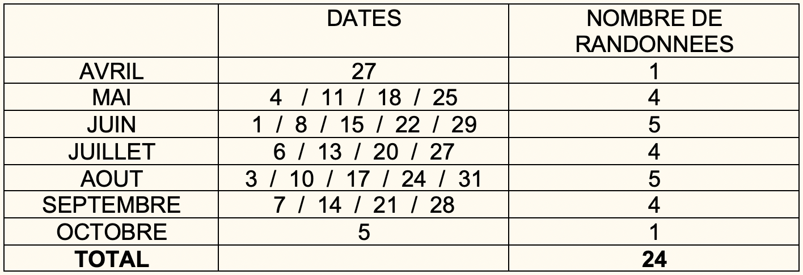

Pour participer, nous demandons :
- Une prescription « sport sur ordonnance » avec si nécessaire des indications pour une surveillance particulière.
- Un certificat d’absence de contre indication aux efforts physiques en altitude (> 2 000 m)
- Un entretien téléphonique avec l’une de nous deux pour mieux connaitre la personne, cerner ses besoins et envies
Nous vous envoyons un calendrier doodle dans lequel vous vous inscrivez.
Un mail d’invitation vous est envoyé une semaine à l’avance avec la date et le lieu de RDV, puis un deuxième la veille de la sortie pour confirmation (en fonction de la météorologie).
Les groupes sont de 8 personnes maximum par accompagnatrice.
Durant la marche, nous pouvons effectuer les surveillances prescrites (TA, T°, FC, glycémie saturation...) dans la bienveillance sans que cela perturbe l’activité.
Nous proposons également aux personnes ou aux médecins qui le souhaitent un suivi spécifique, nous avons plusieurs grilles d’évaluations et pouvons également en construire d’autres adaptées à vos besoins.
Tarifs
Pour deux accompagnatrices en montagne et 16 personnes maximum :
- 260 euros / demi-journée
- 480 euros / journée
Calendrier 2021
